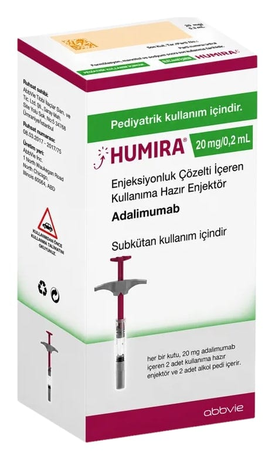

Humira 20 mg/0,2 ml Enjeksiyonluk Çözelti İçeren Kullanıma Hazır Enjektör, 2 Adet

Ne için kullanılır
KT · Bölüm 1HUMIRA
20 mg, 0,2 mL çözelti içinde çözünmüş 20 mg adalimumab etkin maddesini steril, enjeksiyonluk çözelti halinde içeren kullanıma hazır enjektördür.
Bir kutuda berrak, renksiz çözelti içeren 2 adet kullanıma hazır enjektör vardır; her bir enjektör alkollü ped ile birlikte blister içinde ambalajlanmıştır.
HUMIRA aşağıda yer alan hastalıkların tedavisinde kullanılır:
Poliartiküler jüvenil idiyopatik artrit (eklemleri etkileyen yangısal (inflamatuvar) bir hastalık), Entezit ile ilişkili artrit (eklemleri ve tendonların kemiğe bağlandığı yerleri etkileyen yangısal (inflamatuvar) kronik bir hastalık) Çocuklarda plak tipi sedef hastalığı (psöriyazis) (derinin gümüş pullarla kaplı kırmızı, pul pul, kabuklu yamalar şeklinde olmasına neden olan bir cilt hastalığı) Çocuklarda Crohn hastalığı (sindirim kanalının yangısal (inflamatuvar) bir hastalığı) Çocuklarda üveit (gözün belirli bölümlerini etkileyen yangısal (inflamatuvar) bir hastalık)
HUMIRA’nın etkin maddesi olan adalimumab “Çin hamster yumurtalık” hücrelerinde üretilen bir rekombinant insan monoklonal antikorudur. Monoklonal antikorlar özel hedeflere bağlanan proteinlerdir.
Adalimumabın hedefi, bağışıklık sisteminde yer alan ve yukarıda listelenen inflamatuvar (yangısal) hastalıklarda yüksek düzeylerde bulunan tümör nekroz faktörü (TNF-alfa) olarak adlandırılan bir proteindir. HUMIRA, TNF-alfa’ya bağlanarak bu hastalıklarda yangılanma sürecini azaltır.
Poliartiküler jüvenil idiyopatik artrit
Poliartiküler jüvenil idiyopatik artrit, çoğunlukla çocukluk çağında ortaya çıkan eklemleri etkileyen yangısal (inflamatuvar) bir hastalıktır.
HUMIRA, 2-17 yaş arasındaki çocuklarda poliartriküler jüvenil idiyopatik artrit tedavisi için kullanılır. Çocuğunuza ilk olarak metotreksat gibi hastalığı modifiye edici başka ilaçlar verilebilir. Bu ilaçlar yeterince iyi cevap vermezse, çocuğunuza poliartiküler juvenil idiopatik artrit tedavisinde HUMIRA verilir.
HUMIRA’nın metotreksat ile mi yoksa tek başına mı kullanılacağına doktorunuz karar verecektir.
Entezit ile ilişkili artrit
Entezit ile ilişkili artrit, eklemleri ve tendonların kemiğe bağlandığı yerleri etkileyen yangısal (inflamatuvar) bir hastalıktır.
HUMIRA, 6-17 yaş arasındaki çocuklarda entezit ile ilişkili artrit tedavisinde kullanılır. Çocuğunuza ilk olarak metotreksat gibi hastalığı modifiye edici başka ilaçlar verilebilir. Bu ilaçlar yeterince iyi cevap vermezse, çocuğunuza entezit ile ilişkili artrit tedavisinde HUMIRA verilecektir.
Çocuklarda plak tipi sedef hastalığı (Plak Psöriyazis)
Plak tipi sedef hastalığı; derinin gümüş pullarla kaplı, kırmızı, pul pul, kabuklu yamalar şeklinde olmasına neden olan bir cilt hastalığıdır. Plak tipi sedef hastalığı tırnakları da etkileyebilir; tırnakların parçalanmasına, kalınlaşmasına ve ağrılı olabilen tırnak yatağından uzaklaşmalara neden olur. Vücudun bağışıklık sistemindeki bir problemin cilt hücrelerinin artarak plak tipi sedef hastalığının ortaya çıkmasına yol açtığı düşünülmektedir.
HUMIRA, topikal tedavilere veya fototerapiye yeterli cevap vermeyen ya da uygun aday olmayan 4-17 yaş arasındaki çocuklarda ve ergenlerdeki şiddetli kronik plak tipi sedef hastalığının tedavisinde kullanılmaktadır.
Çocuklarda Crohn hastalığı
Crohn hastalığı, sindirim sisteminin yangısal (inflamatuvar) bir hastalığıdır.
HUMIRA, 6-17 yaş arasındaki çocuklarda orta ila şiddetli derecede Crohn hastalığının tedavisi için kullanılır.
Çocuğunuza ilk olarak başka ilaçlar verilebilir. Bu ilaçlar yeterince iyi cevap vermezse, çocuğunuza hastalığın belirtilerini ve bulgularını azaltmak için HUMIRA verilecektir.
Çocuklarda üveit
Enfeksiyöz olmayan üveit gözün belirli bölümlerini etkileyen yangısal (inflamatuvar) bir hastalıktır.
HUMIRA, 2 yaşından itibaren çocuklarda gözün ön bölümünü etkileyen iltihaplanmayla seyreden kronik enfeksiyöz olmayan üveit (sistemik hastalıkla ilişkili veya sistemik hastalık olmadan gelişebilen bir göz içi iltihabı) tedavisinde kullanılmaktadır.
Bu iltihaplanma, görmede azalmaya ve/veya gözde uçuşan cisimlere (görüş alanından hareket eden siyah noktalar veya ince çizgiler) neden olabilir. HUMIRA, bu iltihaplanmayı azaltarak etki gösterir.
Çocuğunuza ilk olarak başka ilaçlar verilebilir. Bu ilaçlar yeterince iyi cevap vermezse, çocuğunuza hastalığın belirtilerini ve bulgularını azaltmak için HUMIRA verilecektir.